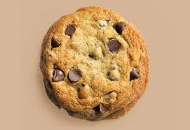

This recipe teaches you how to make a delicious cookie. Just one cookie. A singular cookie.
While cookies are great and delicious, too many can be bad for you! So, we'll bake one big cookie. Like a pizza. And if you think of it like a pizza,
perhaps your first instinct will be to save some for later.